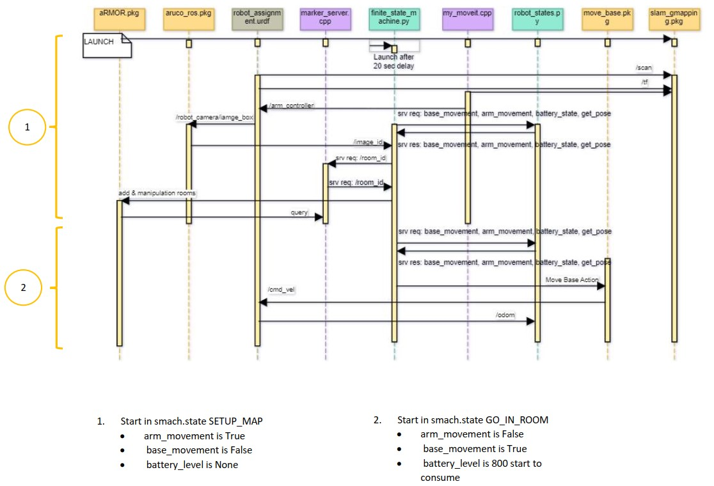

Temporal diagram¶
{kind=link}
At the beginning Launch file launch all the nodes and packages except finite_state_machine.py.
The last one started working automatically with the first launch after 20 sec of delay, this delay is a
necessary because simulation needs some time to add a robot model in the environment and make it able to execute
function defined in FSM node.
In the first step SETUP_MAP, slam_gmapping subscribe to /scan and /tf generated from robot urdf <Gazebo> and
also my_moveit.cpp subscribe to /tf information to uses for /arm_controller. At the tip of the robot arm, there is a camera
that helps the robot detect marker_id in the world. The image_od acquired by the camera publish to FSM, this node uses
a service(req & res) to get information about the room id detected. After finishing this step GO_IN_ROOM state started and FSM send
an action to the move_base package, therefore move_base publishes /cmd_vel to robot urdf <Gazebo> to move the robot around the map.
The information related to odometry is sent to robot_state.py and the last node mentioned store information in Get_pose.srv.
N.B: There are 5 states in the FSM node, here demonstrated just two of them. At the beginning of each state /arm_movement_state and
/base_movement_state``are changed and ``/battery_level_state after the first state starts consuming.